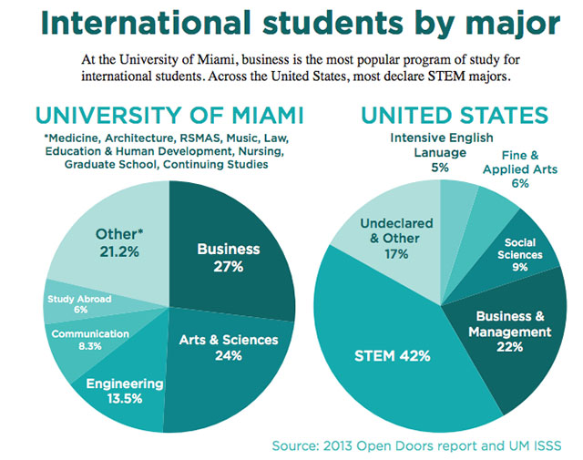
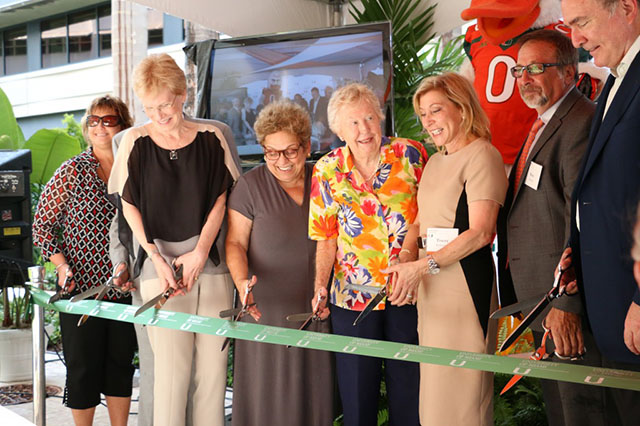
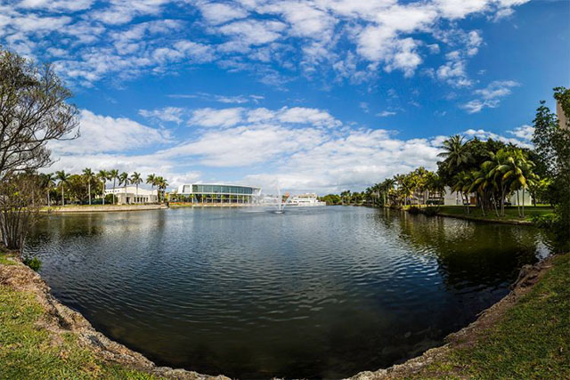
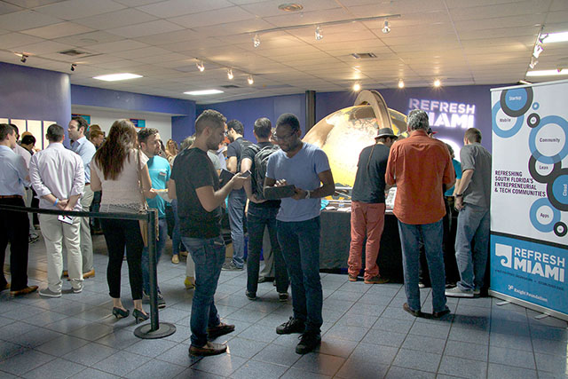

International students face challenges, reap benefits
Sophomore Raneem Al-buaijan came to the University of Miami in August 2013 after receiving the Kuwaiti Merit Scholarship, a grant issued by the Kuwaiti Cultural Office that gives high-achieving students from Kuwait the opportunity to study in a U.S. institution. UM was on the scholarship list for her Electronic Media major, so she decided to pursue the American higher education experience. Read More

RSMAS inaugurates $50 million marine research complex
The Rosenstiel School of Marine and Atmospheric Science (RSMAS) inaugurated its new 86,000-square-foot Marine Technology and Life Sciences Seawater Complex, which will allow for groundbreaking experiments and scientific investigations.
The brand new research complex is worth $50 million, and will support research in the areas of air-sea interaction, marine life science, tropical marine biology and biomedicine, all under one roof.Read More
Fast Lane Fridays attract diverse cast of car enthusiasts
Twenty-year-old mechanic Dominic Abreu has loved cars since he was a little boy, influenced by his father’s background as a mechanic and recreational racer. The two Chevy lovers describe themselves as Muscle guys to the bone, and they have been working on their 1992 Camaro and 1984 Corvette to experience the new age of drag racing in South Florida, which roars to life one Friday a month at the Miami-Homestead Speedway. Read More
Band of the Hour ready for 2015 season
Comprised of more than 100 student members, the Band of the Hour is one of UM’s oldest student organizations, dating back to 1933. The band is comprised of woodwinds, brass, percussion, the Color Guard and the Hurricanette dance line, making it both a musical and visual experience.
When the Hurricanes kick off their football season against Bethune-Cookman in their new Adidas uniforms this Saturday, the Band of the Hour will also debut new uniforms as they strive to keep thousands of fans energized through one collective sound. Read More

Lake Osceola a changing, complex landmark
Each day, thousands of students walk past Lake Osceola on their way to class, yet few take the time to appreciate the diversity and rich history of this campus landmark.
Underneath its surface, the lake is home to an array of flora and fauna. Since 1947, it has been a central part of the University of Miami campus. Originally, Lake Osceola was a canal that provided a transit point between terrestrial freshwater systems and Biscayne Bay. Once the university was built, the area was dredged out to become the lake we know today. Read More
How to fly high: Spirit CEO offers entrepreneurs 5 tips for building successful businesses
Entrepreneurs are soaring high in Miami, with the city recently ranking No.2 on the Kauffman Index for startup activity. But how can someone go from being an entrepreneur to a successful business magnate? Ben Baldanza, CEO of Spirit Airlines, attempted to answer the complicated question during this month’s Startup Grind Miami fireside chat at The LAB Miami. Read More

Miami design thinking workshop puts users first in innovation
Many organizations and startups claim to foster innovation. But do they really? That is why Jessica Do and Mariana Rego, co-founders of Design Thinking Miami, started organizing social and educational events on design thinking, a way to arrive at solutions by putting user experience first. Read More
International Women’s Forum roundtable connects, elevates female entrepreneurs
All big businesses start small, and they grow by following what Kay Koplovitz, founder of USA Networks, calls a trail of little victories. This was one of the many lessons shared during the International Women’s Forum two-day Executive Development Roundtable for entrepreneurs in Miami last week. The intimate event, supported by Knight Foundation, attracted more than 70 participants. Read More